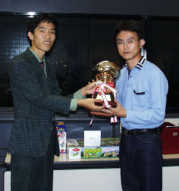

私がバックギャモンを知ったのは、1995年ごろに大学の先輩がパソコン（FMV）にプリインストールされていた GAMEPACK のバックギャモンをプレイしているのを見たときです。そのときは、「こんなゲームもあるのか」という程度の認識でした。
1996年から始めたニフティの将棋＆チェスフォーラムでは、「しすの楽園」というソフトを使ってバックギャモンの大会が開かれており、少し興味を持ちました。そこで、GAMEPACK のヘルプを見てルールを理解し、試しにプレイしてみたところ、これがなかなか面白い。1週間ほど、暇さえあればコンピュータと対戦していました。当初は戦略も何も分からず、まったく勝てませんでしたが、慣れてくると少しずつ勝てるようになりました。
さて、1998年ごろ、大きな本屋でゲームのコーナーを見ていたら、『バックギャモン・ブック（旧版）』を見つけました。その本を購入して読んだことで、バックギャモンの戦略を知り、ますます興味を持つようになりました。ニフティーのゲームフォーラムの会議室ではハイパーギャモンの話題が出ており、「デプレではやったことがあります」という書き込みを見つけました。そこで「デプレとは何ですか？」と質問したところ、原宿のカフェ・デプレという店でバックギャモンをしている人たちがいることを教えてもらいました（その後デプレは閉店し、バックギャモンナイト in 代官山として継続）。
はじめてデプレに行ったのは、1999年のはじめ頃だったと思います。話を聞くと、毎週ここにバックギャモンを楽しみたい人たちが集まるとのことでした。カフェバーでギャモンを楽しむ優雅さと、アットホームな雰囲気に惹かれ、たびたび足を運ぶようになりました。
デプレで日本バックギャモン協会（当時はJBL）の方たちと知り合いになり、JBL 主催のイベントにも顔を出すようになります。はじめて参加したのが、1999年5月16日に行われた「ビギナーズカップ」です。その年のジャパンオープンでは、初心者戦に出場しました。1ポイントマッチ形式でさまざまな相手と対戦しましたが、結果は大きく負け越しました。その後、いくつかの大会に参加し、2000年8月13日に開催された「チャレンジカップ」のビギナークラス（16名参加）で優勝しました（写真はそのときのものです）。
2000年にはさまざまな大会に参加していましたが、2005年のバックギャモンフェスティバルを最後に、大会への参加は途絶えました。当時は GamesGrid というオンラインサイトでバックギャモンが盛んにプレイされており、私は GGracoon というボットを相手に対戦していました（トップ画像はそのときのものです）。また、2000年に開設したバックギャモンの掲示板では、手軽にギャモンの図面を投稿できることもあり、2003年まで多くのギャモナーが集まっていました。
それから約20年間バックギャモンから離れていましたが、2025年に日本バックギャモン協会に再入会し、プレイを再開しました。
{kind=link}